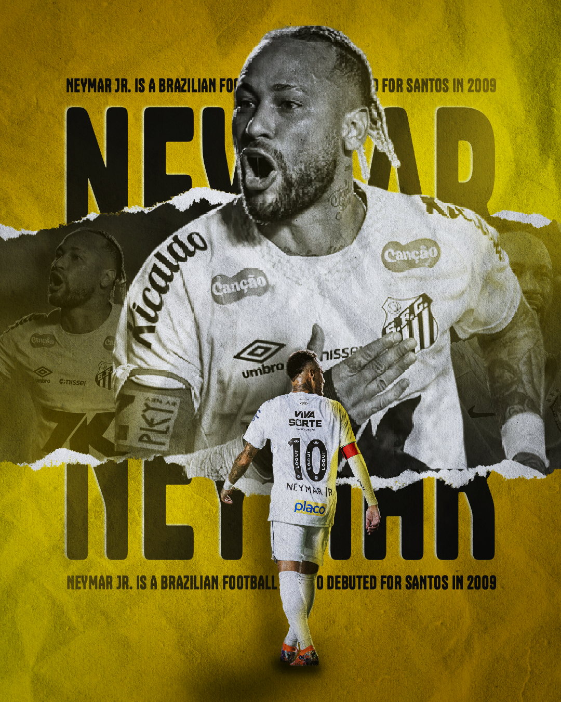

Arte Esportiva de Neymar – Design Criativo Inspirado no Futebol
A arte esportiva é uma forma criativa de representar grandes atletas do futebol por meio do design gráfico. Entre os jogadores mais conhecidos do mundo, Neymar é frequentemente utilizado como inspiração em projetos visuais relacionados ao esporte. Artes esportivas com temática de futebol são muito populares nas redes sociais, páginas de fãs, perfis esportivos e conteúdos digitais voltados para torcedores.

Como designer gráfico, desenvolvo artes esportivas personalizadas inspiradas no estilo do futebol moderno. Esse tipo de criação combina fotografia, efeitos visuais, tipografia e elementos gráficos que destacam a energia e a emoção do esporte.
Design Esportivo Inspirado em Grandes Jogadores
O design esportivo busca capturar a intensidade do futebol por meio de cores vibrantes, iluminação dramática e composições criativas. Jogadores famosos servem como referência visual para criar peças impactantes que chamam atenção nas redes sociais.
Artes inspiradas em atletas de destaque podem ser utilizadas para posts esportivos, capas de redes sociais, páginas de fãs, conteúdos temáticos de futebol e materiais de divulgação.
Arte Esportiva para Redes Sociais
Nas redes sociais, conteúdos visuais chamam muito mais atenção do que textos simples. Por isso, artes esportivas são amplamente utilizadas por páginas de futebol, criadores de conteúdo e perfis esportivos.
Uma arte bem elaborada pode destacar momentos importantes do futebol, comemorações, gols marcantes ou homenagens a jogadores que marcaram a história do esporte.
Elementos Utilizados em Artes de Futebol
A criação de uma arte esportiva envolve vários elementos visuais estratégicos. Entre os principais estão:
• Efeitos de luz e contraste
• Tipografia esportiva moderna
• Texturas e partículas de movimento
• Cores vibrantes relacionadas ao futebol
• Recorte profissional de imagens
Esses elementos ajudam a criar uma composição dinâmica que transmite energia, velocidade e emoção, características típicas do esporte.
Arte Criativa para Conteúdo Esportivo
Além de homenagens a jogadores, as artes esportivas também podem ser utilizadas para divulgar páginas de futebol, canais esportivos, perfis de estatísticas ou conteúdos relacionados a campeonatos e competições.
Esse tipo de design é muito utilizado por criadores de conteúdo que desejam destacar publicações no Instagram, Facebook e outras plataformas digitais.
Processo de Criação da Arte Esportiva
1. Escolha do conceito visual
O primeiro passo é definir o estilo da arte, como uma homenagem ao jogador, uma peça comemorativa ou uma composição criativa inspirada no futebol.
2. Seleção das imagens
São escolhidas imagens de alta qualidade para garantir um resultado visual profissional e impactante.
3. Aplicação de efeitos visuais
Nesta etapa são adicionados efeitos de iluminação, contraste, cores e texturas para criar uma estética esportiva moderna.
4. Finalização da arte
Após ajustes finais, a arte é preparada para publicação em redes sociais ou outros formatos digitais.
Perguntas Frequentes (FAQ)
O que é arte esportiva?
Arte esportiva é um estilo de design gráfico que representa atletas, esportes e competições por meio de composições visuais criativas. Esse tipo de arte é muito utilizado em redes sociais, páginas de fãs e conteúdos esportivos.
Posso usar arte esportiva em redes sociais?
Sim. Artes esportivas são muito populares em plataformas como Instagram, Facebook e páginas de conteúdo esportivo, pois ajudam a chamar atenção e aumentar o engajamento das publicações.
Esse tipo de design é usado apenas para futebol?
Não. O design esportivo pode ser aplicado em diversos esportes como basquete, corrida, MMA, vôlei e muitos outros. No entanto, o futebol costuma ter maior destaque por ser um dos esportes mais populares do mundo.
Quais elementos tornam uma arte esportiva mais impactante?
Uma arte esportiva impactante geralmente utiliza cores vibrantes, efeitos de iluminação, contraste forte, tipografia moderna e uma composição dinâmica que transmite movimento e emoção.
Qual é o horário de atendimento?
O atendimento é realizado de segunda a sábado, com suporte até às 22h. Esse horário estendido facilita o contato de clientes que trabalham durante o dia e precisam resolver projetos ou solicitar artes no período da noite.
O design realmente ajuda páginas de futebol a crescer?
Sim. Um design visual atrativo aumenta o engajamento das publicações, chama mais atenção no feed das redes sociais e contribui para o crescimento de páginas e perfis esportivos.
Solicite sua Arte Esportiva
Se você deseja criar uma arte esportiva criativa e profissional inspirada no futebol, entre em contato para solicitar um orçamento e desenvolver um projeto visual exclusivo.